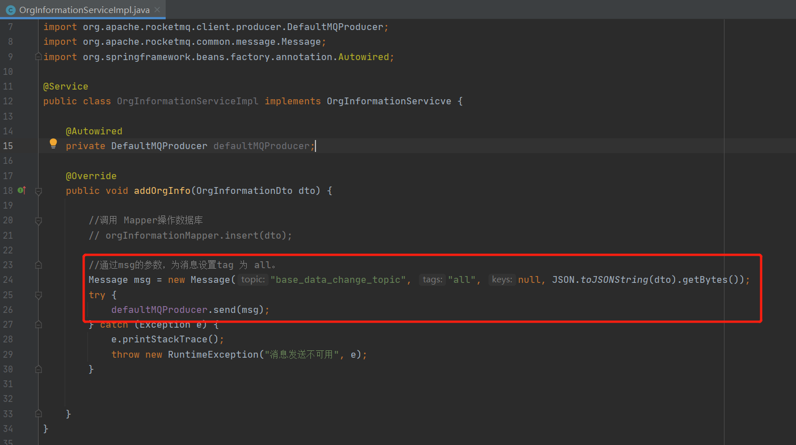

- 01 搭建学习环境准备篇.md.html
- 02 RocketMQ 核心概念扫盲篇.md.html
- 03 消息发送 API 详解与版本变迁说明.md.html
- 04 结合实际应用场景谈消息发送.md.html
- 05 消息发送核心参数与工作原理详解.md.html
- 06 消息发送常见错误与解决方案.md.html
- 07 事务消息使用及方案选型思考.md.html
- 08 消息消费 API 与版本变迁说明.md.html
- 09 DefaultMQPushConsumer 核心参数与工作原理.md.html
- 10 DefaultMQPushConsumer 使用示例与注意事项.md.html
- 11 DefaultLitePullConsumer 核心参数与实战.md.html
- 12 结合实际场景再聊 DefaultLitePullConsumer 的使用.md.html
- 13 结合实际场景顺序消费、消息过滤实战.md.html
- 14 消息消费积压问题排查实战.md.html
- 15 RocketMQ 常用命令实战.md.html
- 16 RocketMQ 集群性能摸高.md.html
- 17 RocketMQ 集群性能调优.md.html
- 18 RocketMQ 集群平滑运维.md.html
- 19 RocketMQ 集群监控（一）.md.html
- 20 RocketMQ 集群监控（二）.md.html
- 21 RocketMQ 集群告警.md.html
- 22 RocketMQ 集群踩坑记.md.html
- 23 消息轨迹、ACL 与多副本搭建.md.html
- 24 RocketMQ-Console 常用页面指标获取逻辑.md.html
- 25 RocketMQ Nameserver 背后的设计理念.md.html
- 26 Java 并发编程实战.md.html
- 27 从 RocketMQ 学基于文件的编程模式（一）.md.html
- 28 从 RocketMQ 学基于文件的编程模式（二）.md.html
- 29 从 RocketMQ 学 Netty 网络编程技巧.md.html
- 30 RocketMQ 学习方法之我见.md.html
- 捐赠
13 结合实际场景顺序消费、消息过滤实战
经过前面的篇幅，我相信大家已经掌握了消息消费方面的常用使用技巧了，本篇将对消息消费领域的其他几个特殊场景进行一些实战演示，并穿插一些原理解读。
顺序消费
业务场景描述
现在开发一个银行类项目，对用户的每一笔余额变更都需要发送短信通知到用户。如果用户同时在电商平台下单，转账两个渠道在同一时间进行了余额变更，此时用户收到的短信必须顺序的，例如先网上购物，消费了 128，余额 1000，再转账给朋友 200，剩余余额 800，如果这两条短信的发送顺序颠倒，给用户会带来很大的困扰，故在该场景下必须保证顺序。这里所谓的顺序，是针对同一个账号的，不同的账号无需保证顺序性，例如用户 A 的余额发送变更，用户 B 的余额发生变更，这两条短信的发送其实相互不干扰的，故不同账号之间无需保证顺序。
代码实现
本篇代码主要采用截图的方式展示其关键代码，并对其进行一些简单的解读。

首先这里的主业务是操作账户的余额，然后是余额变更后需要发短信通知给用户，但由于发送短信与账户转载是两个相对独立但又紧密的操作，故这里可以引入消息中间件来解耦这两个操作。但由于发送短信业务，其顺序一定要与扣款的顺序保证一致，故需要使用顺序消费。
由于 RocketMQ 只提供了消息队列的局部有序，故如果要实现某一类消息的顺序执行，就必须将这类消息发送到同一个队列，故这里在消息发送时使用了 MessageQueueSelector，并且使用用户账户进行队列负载，这样同一个账户的消息就会账号余额变更的顺序到达队列，然后队列中的消息就能被顺序消费。

顺序消费的事件监听器为 MessageListenerOrderly，表示顺序消费。
顺序消费在使用上比较简单，那 RocketMQ 顺序消费是如何实现的？队列重新负载时还能保持顺序消费吗？顺序消费会重复消费吗？
RocketMQ 顺序消费原理简述
在 RocketMQ 中，PUSH 模式的消息拉取模型如下图所示：
上述流程在前面的章节中已做了详述，这里不再累述，这里想重点突出线程池。
RocketMQ 消息消费端按照消费组进行的线程隔离，即每一个消费组都会创建已线程池，由一个线程池负责分配的所有队列中的消息。
所以要保证消费端对单队列中的消息顺序处理，故多线程处理，需要按照消息消费队列进行加锁。故顺序消费在消费端的并发度并不取决消费端线程池的大小，而是取决于分给给消费者的队列数量，故如果一个 Topic 是用在顺序消费场景中，建议消费者的队列数设置增多，可以适当为非顺序消费的 2~3 倍，这样有利于提高消费端的并发度，方便横向扩容。
消费端的横向扩容或 Broker 端队列个数的变更都会触发消息消费队列的重新负载，在并发消息时在队列负载的时候一个消费队列有可能被多个消费者同时消息，但顺序消费时并不会出现这种情况，因为顺序消息不仅仅在消费消息时会锁定消息消费队列，在分配到消息队列时，能从该队列拉取消息还需要在 Broker 端申请该消费队列的锁，即同一个时间只有一个消费者能拉取该队列中的消息，确保顺序消费的语义。
从前面的文章中也介绍到并发消费模式在消费失败是有重试机制，默认重试 16 次，而且重试时是先将消息发送到 Broker，然后再次拉取到消息，这种机制就会丧失其消费的顺序性，故如果是顺序消费模式，消息重试时在消费端不停的重试，重试次数为 Integer.MAX_VALUE，即如果一条消息如果一直不能消费成功，其消息消费进度就会一直无法向前推进，即会造成消息积压现象。
温馨提示：顺序消息时一定要捕捉异常，必须能区分是系统异常还是业务异常，更加准确的要能区分哪些异常是通过重试能恢复的，哪些是通过重试无法恢复的。无法恢复的一定要尽量在发送到 MQ 之前就要拦截，并且需要提高告警功能。
消息过滤实战
业务场景描述
例如公司采用的是微服务架构，分为如下几个子系统，基础数据、订单模块、商家模块，各个模块的数据库都是独立的。微服务带来的架构伸缩性不容质疑，但数据库的相互独立，对于基础数据的 join 操作就不那么方便了，即在订单模块需要使用基础数据，还需要通过 Dubbo 服务的方式去请求接口，为了避免接口的调用，基础数据的数据量又不是特别多的情况，项目组更倾向于将基础数据的数据同步到各个业务模块的数据库，然后基础数据发生变化及时通知订单模块，这样与基础数据的表 join 操作就可以在本库完成。
技术方案

上述方案的关键思路：
- 基础数据一旦数据发生变化，就向 MQ 的 base_data_topic 发送一条消息。
- 下游系统例如订单模块、商家模块订阅 base_data_topic 完成数据的同步。
问题，如果订单模块出现一些不可预知的错误，导致数据同步出现异常，并且发现的时候，存储在 MQ 中的消息已经被删除，此时需要上游（基础数据）重推数据，这个时候，如果基础数据重推的消息直接发送到 base_data_topic，那该 Topic 的所有消费者都会消费到，这显然是不合适的。怎么解决呢？
通常有两种办法：
- 为各个子模块创建另外一个主题，例如 retry_ods_base_data_topic，这样需要向哪个子系统就向哪个 Topic 发送。
- 引入 Tag 机制。
本节主要来介绍一下 Tag 的思路。
首先，正常情况下，基础模块将数据变更发送到 base_data_topic，并且消息的 Tag 为 all。然后为每一个子系统定义一个单独的重推 Tag，例如 ods、shop。
消费端同时订阅 all 和各自的重推 Tag，完美解决问题。
代码实现
在消息发送时需要按照需求指定消息的 Tag，其示例代码如下：

然后在消息消费时订阅时，更加各自的模块订阅各自关注的 Tag，其示例代码如下：
在消息订阅时一个消费组可以订阅多个 Tag，多个 Tag 使用双竖线分隔。
Topic 与 Tag 之争
用 Tag 对同一个主题进行区分会引来一个“副作用”，就是在重置消息消费位点时该消费组需要“处理”的是所有标签的数据，虽然在 Broker 端、消息消费端最终会过滤，不符合 Tag 的消息并不会执行业务逻辑，但在消息拉取时还是需要将消息读取到 PageCache 中并进行过滤，会有一定的性能损耗，但这个不是什么大问题。
在数据推送这个场景，除了使用 Tag 机制来区分重推数据外，也可以为重推的数据再申请一个额外的主题，即通过主题来区分不同的数据，这种方案倒不说不可以，但这个在运维管理层面需要申请众多的 Topic，而这类 Topic 存储的其实是一类数据，使用不同的 Topic 存储同类数据，会显得较为松散。当然如果是不同的业务场景，就建议使用 Topic 来隔离。
小结
本篇主要从两个贴近实战场景，结合场景来介绍如何使用顺序消息、消息过滤，所有的示例代码整合在一个 Spring Boot + Dubbo + RocketMQ + MyBatis 的工程中。
© 2019 - 2023 Liangliang Lee. Powered by gin and hexo-theme-book.